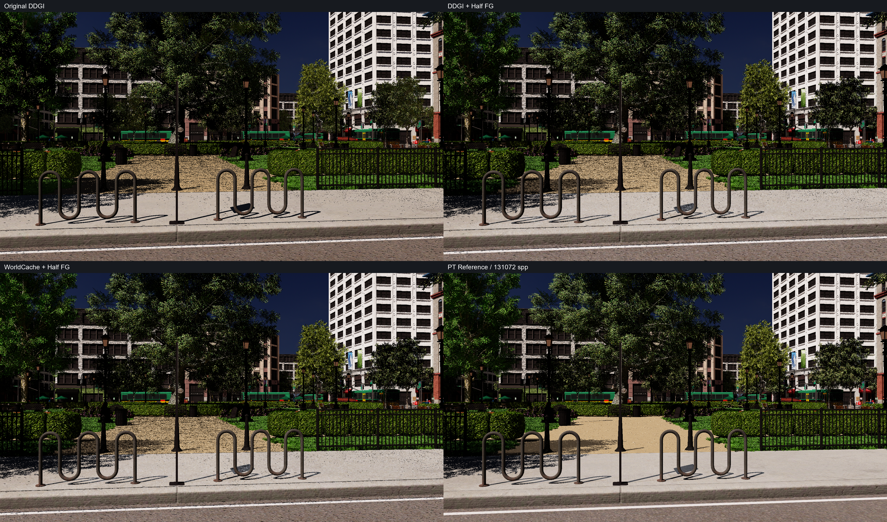
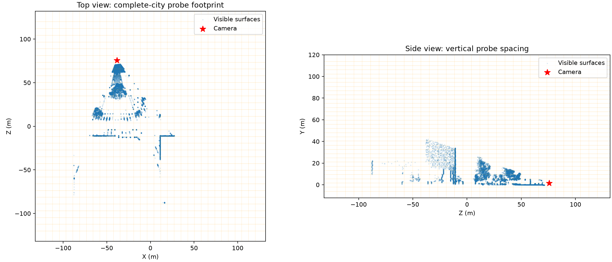
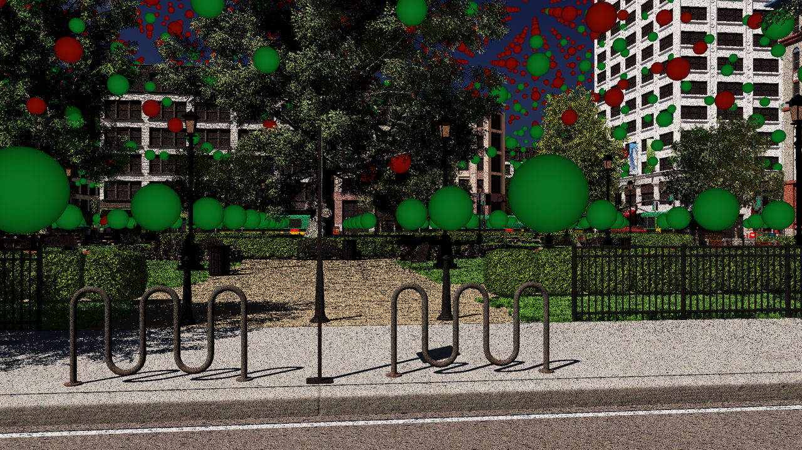
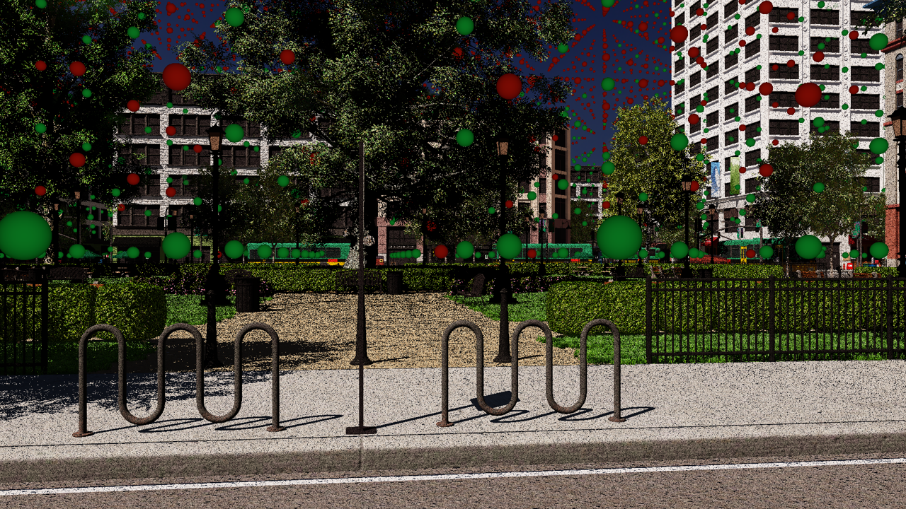
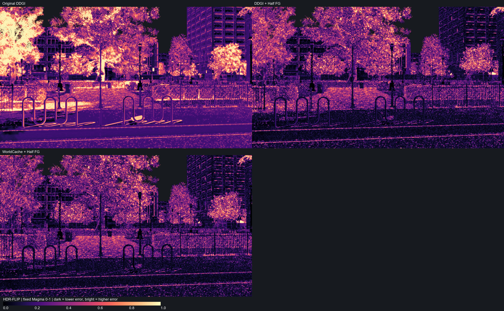
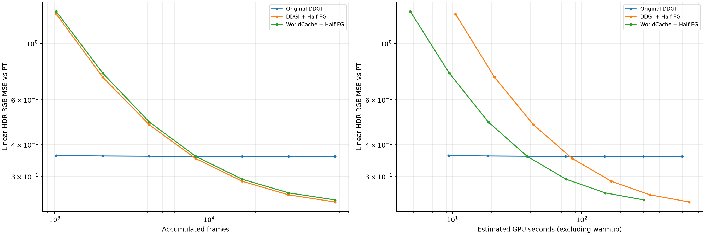
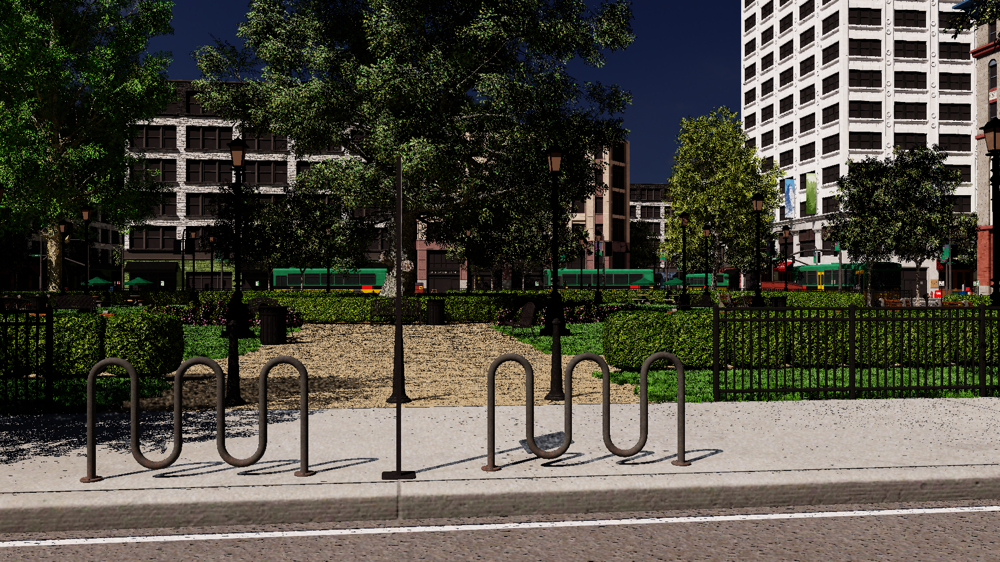
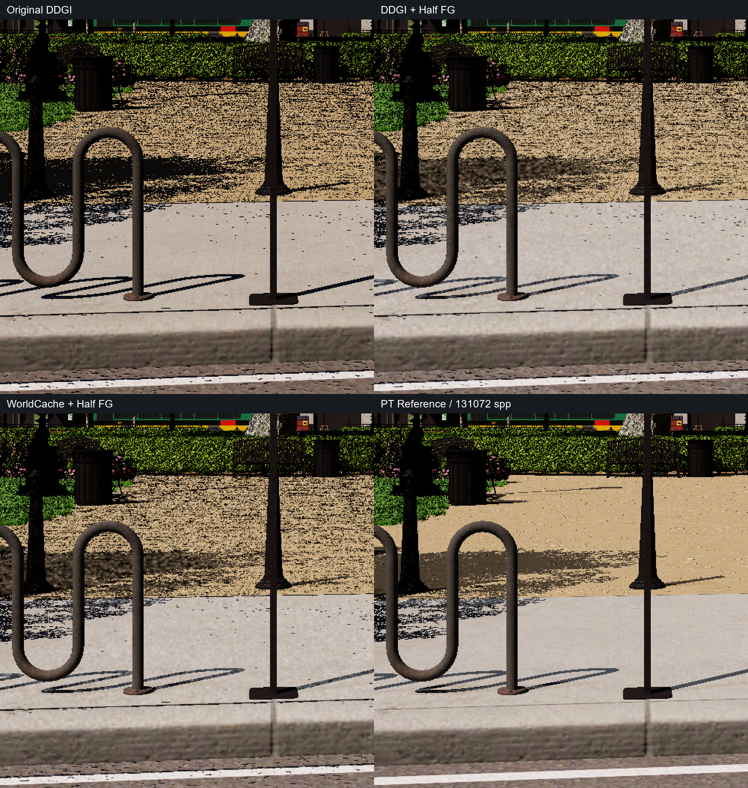

后续诊断补充（2026-11-19）：此轮结果混入了主命中材质处理不一致。PT 默认跟随 GBuffer 开启 AdjustShadingNormal，而 DDGI/FG 在重建主命中材质时没有传递该标志。关闭 GI、只保留太阳光的对照中，关闭 PT 该修正后，它与 DDGI 的地面输出 MSE 为 0；开启后，测试区域 9088 个法线相关黑点中有 8655 个恢复亮度。因此本报告仍是旧版本实现的实测数据，但不能将这些误差全部归因于 GI 缓存或探针质量。另有双灯均匀单样本选择造成的运动时高方差。待统一材质处理和直接光采样后，应重测公平对比。
1920×1080 · 原生 DDGI、DDGI＋半分辨率 FG、WorldCache＋半分辨率 FG、未降噪 PT Reference。全部使用 Accumulate。ReSTIR、NRD、RTXDI 关闭。实用收敛检查：PT 参考通过收敛检查；GI 在 65536 帧预算下未通过全部稳定性检查，指标包含残余噪声。
| 方案 | 线性 HDR RGB MSE ↓ | HDR-FLIP ↓ | GPU 整图 ms ↓ |
|---|---|---|---|
| 原生 DDGI（像素插值 probe） | 0.3590981 | 0.39135 | 9.137 |
| DDGI＋半分辨率 FG | 0.2380532 | 0.24817 | 10.308 |
| WorldCache＋半分辨率 FG | 0.2424913 | 0.23562 | 4.612 |
| PT Reference（131072 spp 总累积） | — | — | 129.168（8 spp/帧） |
表中三种 GI 均为 8192 帧预热后再累积 65536 帧；相同累积帧数不代表三组都到达了完全收敛后的偏差。
WorldCache＋半分辨率 FG 相对 DDGI＋半分辨率 FG：MSE +1.86%，HDR-FLIP -5.06%，GPU 耗时 -55.26%。
这是当前 Falcor 适配和参数的对比，不是完整 UE Lumen 或理想密度 DDGI 的算法排名。未匹配总射线预算或 GPU 时间。WorldCache 不使用 DDGI 探针。

场景约 997 万实例化三角形，AABB 约 230×113×230 米。读取固定相机的全分辨率 GBuffer 世界位置及法线，排除天空后，现有体积对可见表面的覆盖率为 100.00%。可见点 Y 范围约 −0.2～42.85 米，93.26% 位于 20 米以下。
启动默认网格是 32×16×32，间距 7.74×8×7.74 米；本次实验提高到 32×32×32=32768 probes，范围仍为 (−120,−6,−120)～(120,114,120)，间距 7.74×3.87×7.74 米。仅调整实验脚本，不改变启动默认配置。每 probe 256 rays，hysteresis=0.97，relocation/classification 开启，normal/view/min-frontface 世界距离为 0.1/0.3/0.3 米。两条 DDGI 路径采用同一配置。
包围盒包含所有可见点不等于插值质量充分：水平探针仍稀疏，细小植被、窄遮挡、建筑内部可能存在泄漏或过暗。本次保持全城覆盖，不用裁切体积换取默认相机的局部高密度。分类可能将空中或封闭区域探针置为 inactive；数量与预热后状态见 summary.json。

下图为原始粗网格的探针位置检查；绿色为 active、红色为 inactive。球体半径是最小网格间距的 8%，加密前后球体大小不同。探针显示仅用于检查，正式图像和耗时均关闭。

本次 32³ 网格：

使用官方白天版相机、太阳光、点光源及 HDR 天空，冻结场景动画。全部表面替换为 PBRTDiffuseMaterial（ρ/π），保留颜色、法线和透明裁剪；无镜面、透射或表面自发光。资源来自 NVIDIA ORCA Emerald Square，Nicholas Hull、Kate Anderson、Nir Benty，CC BY-NC-SA 3.0。
三种 GI 各预热 8192 帧，再清空 Accumulate，累积 65536 帧；缓存持续更新。累积精度 SingleCompensated。两条 FG 均为 960×540，在每个 2×2 块左上角发射一条漫反射射线，jitter 关闭，使用相同深度／法线引导重建。WorldCache 表容量 2²⁰、density=20、最小 cell 宽度 0.025、每 8×8 像素一条缓存更新路径、3 次更新顶点及末端缓存查询、历史 16、64 帧未用淘汰、亮度截断关闭。
PT 为 8 spp/帧、31 次最大表面及漫反射反弹、NEE+MIS、RR 关闭、不降噪。两条独立序列各 65536 spp，等权线性平均得到 131072 spp 参考。初始参考不足时追加连续且不重复的样本。
MSE 在共同可见表面 mask 内对未曝光、未色调映射 HDR RGB 求均方误差；HDR-FLIP 使用 PPD=67、ACES，以及由同一 PT 推导的曝光范围。天空不参与评分。不同场景亮度尺度不同，不能直接拿这里的 MSE 数值和 Sponza/Cornell 排名。
最亮 10% 表面对各方案总平方误差的贡献：原生 DDGI（像素插值 probe） 60.37%, DDGI＋半分辨率 FG 55.91%, WorldCache＋半分辨率 FG 56.26%。所有 PNG 共用 -3.0576 EV（由 PT 可见表面亮度第 99 百分位决定）、ACES fitted 和 sRGB；展示曝光不影响 MSE。
统一 Magma [0,1]，暗紫黑误差低、红橙浅黄误差高；不是百分比差异，也不区分偏亮／偏暗。mask 外及留白为深灰。

本场景的官方 HDR 天空包含极高亮区域：RGB 最大值 146432，亮度中位数约 0.189、最大值约 128757；亮度超过 100 的像素仅占经纬纹理约 0.00465%（非立体角比例）。当前两条 FG 在首跳使用材质采样，miss 后读取天空，没有对此跳做环境 NEE/MIS；PT 使用 NEE+MIS。这是 FG 高方差的合理来源，尚未通过拆分光照的消融实验定量归因。没有降低 HDR 亮度、裁剪火花或启用降噪来改变本次对比。若某组未通过下面的检查，其指标代表给定累积帧数下的结果，不能称为完全收敛后的偏差。

| 方案 | 32768→65536 MSE 变化 | HDR-FLIP 变化 | 前后图像差异 MSE / 对 PT 误差 | 检查 |
|---|---|---|---|---|
| 原生 DDGI（像素插值 probe） | -0.076% | -1.137% | 0.018% | 未通过 |
| DDGI＋半分辨率 FG | -6.233% | -4.607% | 6.872% | 未通过 |
| WorldCache＋半分辨率 FG | -6.214% | -4.192% | 6.842% | 未通过 |
GI 要求上述三项绝对比例低于 1%。PT 独立序列差异 MSE/4=8.07929e-05，估计参考残余噪声，占最小方案误差 0.034%；噪声 RMS/参考 RGB RMS=0.397%。参考翻倍图像差异 MSE=8.046648e-05，HDR-FLIP=0.00737。
PT 阈值：噪声及翻倍差异低于最小方案误差的 1%，相对 RGB RMS 噪声低于 0.5%，各方案 MSE/HDR-FLIP 随参考翻倍变化低于 1%。这是有限采样实用检查，不证明每个像素完全收敛。检查结果：{"gi_converged": false, "pt_noise_below_1percent_method_error": true, "pt_relative_rgb_rms_below_0_5percent": true, "pt_doubling_below_1percent_method_error": true, "pt_reference_scores_stable": true}。
原生 DDGI：Visibility → DDGI [ProbeUpdate → PrimaryShading / probe interpolation] → Accumulate → Display DDGI + Half FG：Visibility → DDGI [ProbeUpdate → PrimaryShading → HalfGather] → Reconstruct → Accumulate → Display WorldCache + Half FG：Visibility → WorldCache [CachePaths → CacheResolve → PrimaryShading → HalfGather] → Reconstruct → Accumulate → Display PT Reference：Visibility → PT [8 spp/frame] → Accumulate → Display
RTX 5070 / D3D12。每组计时 511 帧，包含探针／缓存更新、GBuffer、着色、重建、累积及 ToneMapper；不含截图和统计回读。内部子阶段已计入父 pass，不能重复相加。PT 计时固定末次随机种子，生成参考图时则逐帧更换种子；PT 单帧耗时不是生成整张参考图的总成本；收敛曲线 GPU 时间轴为稳态整图时间×帧数，不含预热。
| Pass / ms | 原生 DDGI（像素插值 probe） | DDGI＋半分辨率 FG | WorldCache＋半分辨率 FG | PT Reference |
|---|---|---|---|---|
| Visibility | 1.219 | 1.329 | 1.329 | 1.222 |
| WorldCache | — | — | 2.669 | — |
| DDGI | 7.558 | 8.363 | — | — |
| PT | — | — | — | 127.564 |
| Reconstruct | — | 0.256 | 0.254 | — |
| Accumulate | 0.306 | 0.306 | 0.309 | 0.328 |
| Display | 0.055 | 0.055 | 0.052 | 0.054 |
| GI 内部阶段 / ms | 原生 DDGI（像素插值 probe） | DDGI＋半分辨率 FG | WorldCache＋半分辨率 FG | PT Reference |
|---|---|---|---|---|
| DDGI/ProbeUpdate | 5.222 | 5.224 | — | — |
| DDGI/ProbeUpdate/OriginalTrace | 3.542 | 3.540 | — | — |
| DDGI/ProbeUpdate/SDKUpdate | 1.680 | 1.683 | — | — |
| DDGI/PrimaryShading | 2.334 | 1.187 | — | — |
| DDGI/HalfGather | — | 1.951 | — | — |
| WorldCache/WorldCacheUpdate | — | — | 0.527 | — |
| WorldCache/WorldCacheUpdate/CachePaths | — | — | 0.495 | — |
| WorldCache/WorldCacheUpdate/CacheResolve | — | — | 0.030 | — |
| WorldCache/PrimaryShading | — | — | 1.180 | — |
| WorldCache/HalfGather | — | — | 0.962 | — |
局部放大取原图 (400,540)～(900,1040)，观察自行车架、近处地面与阴影。


PT 递增检查：reference-check-131072 · reference-check-32768 · reference-check-65536
完整结果和配置 · 覆盖统计。原始数据：build/emerald-worldcache-ddgi-1080p-20261119；运行／评分脚本：tests/ddgi/emerald_worldcache_comparison.py、score_emerald_worldcache_comparison.py。未覆盖旧实验。